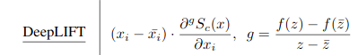

Michał Miotk
Agenda
DeepLIFT history
Everything starts 2016 paper from Stanford which already describes basics concept:Not Just A Black Box:Interpretable Deep Learning by Propagating Activation Differencesthis paper not fully describes concept, new release in 2019 give more lights:
Learning Important Features Through Propagating Activation Differences
Image from 2019 paper
Image describing multiplier calculation
Image from TOWARDS BETTER UNDERSTANDING OFGRADIENT-BASED ATTRIBUTION METHODS FOR DEEP NEURAL NETWORKS
DeepLIFT not satisfy axiom - Implementation Invariance - if two different neural networks gives for same inputs same outputs predictions should be the same
image from Axiomatic Attribution for Deep Networks
DLP has better results because it also additionaly takes into consideration impact of layer to output
L1 takes only impact of neuron to layer
"There's no such thing as a stupid question!"